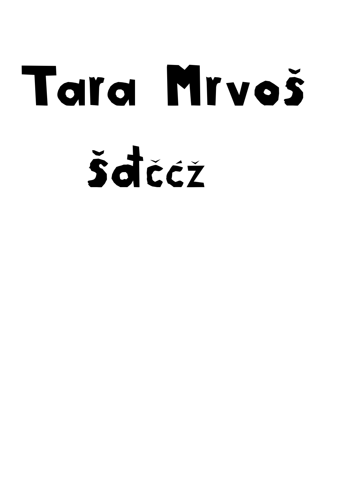
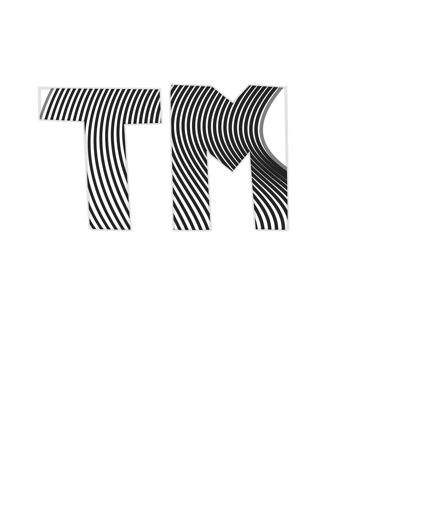
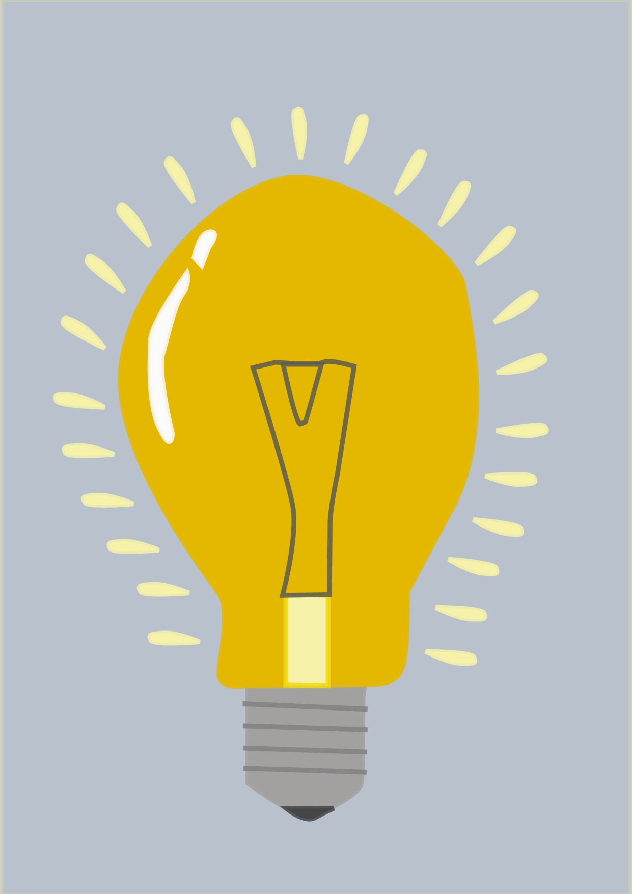
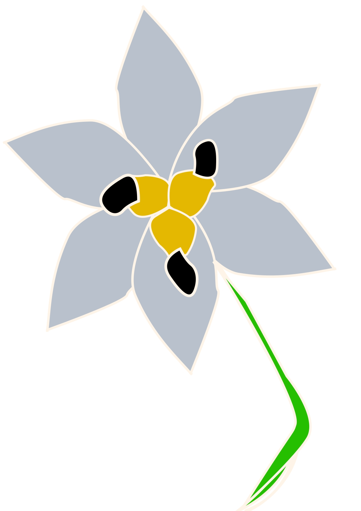
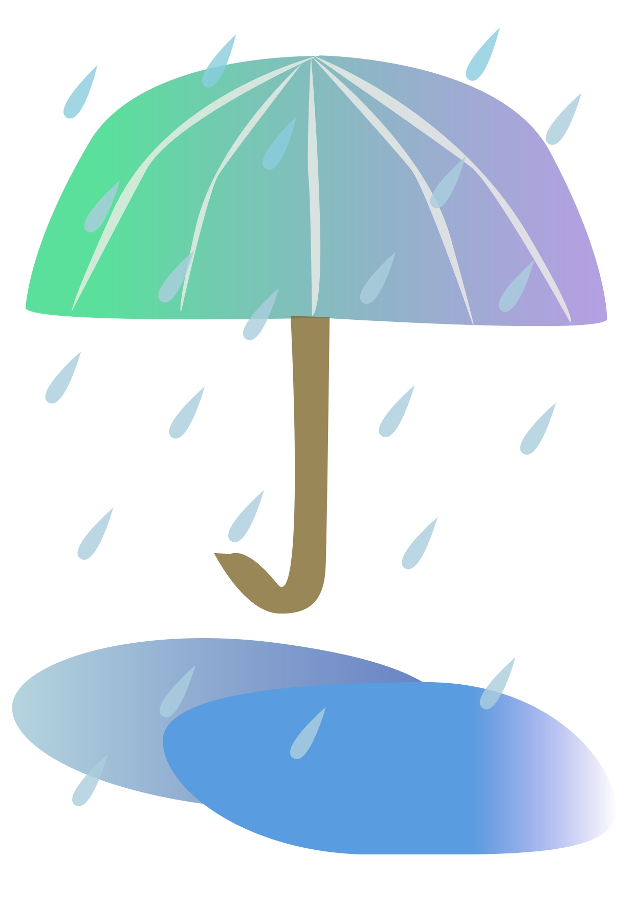
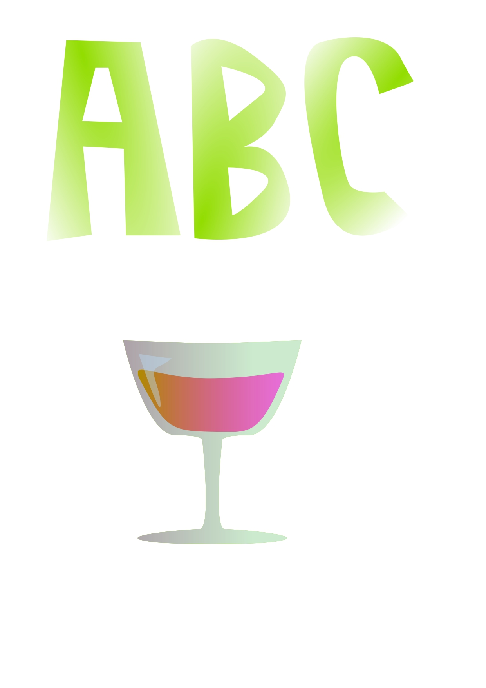
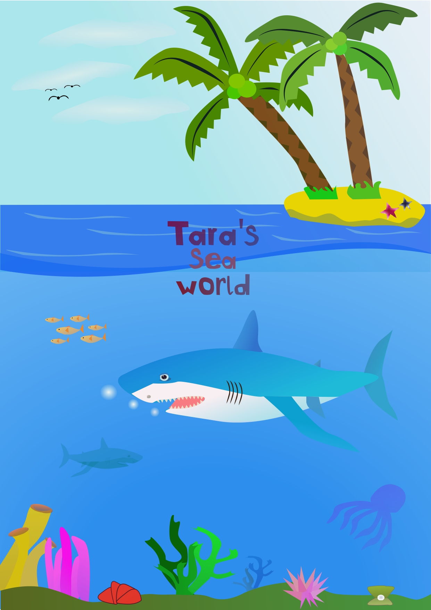
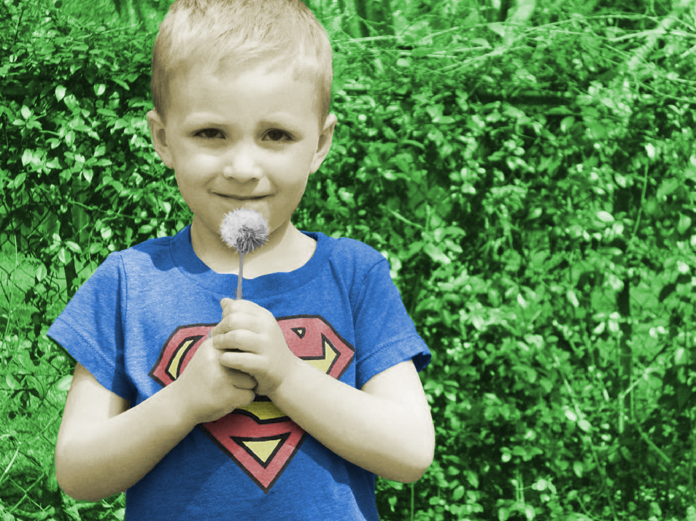
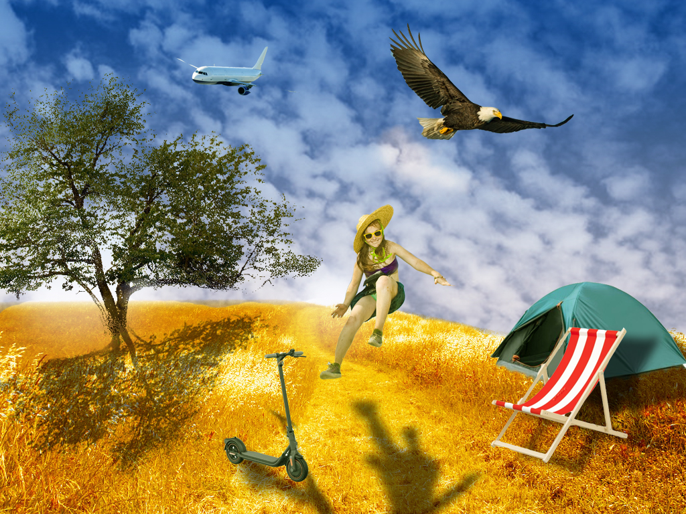
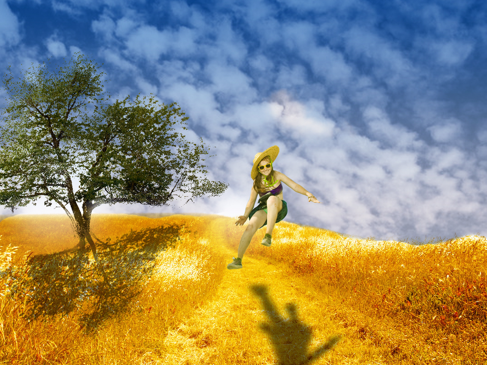

Prva vježba: Zadatak za prvu vježbu bio je napraviti vlastiti font u nekom programu, a ja sam radila u FontForgeu.
Druga vježba: U drugoj smo vježbi vježbali raditi Bazierove krivulje u programu Inkscape. Nakon što smo napravili svoj vlastiti font, uredili smo ga dodajući Bazierove krivulje unutar njega.
Treća vježba: Koristeći se raznim alatima, u trećoj vježbi smo učili kako crtati pomoću Bazierovih krivulja u programu Inkscape.
 Četvrta vježba: U četvrtoj smo vježbi naučili kako raditi gradijent i transparenciju. Pa smo tako u Inkscapeu nacrtali sliku pomoću Bazierovih krivulja i dodali joj gradijent i transparenciju.
 Prvi projektni zadatak: U prvom projektnom zadatku morali smo napraviti svoju sliku u programu Inkscape na temu mora koristeći se stečenim znanjem iz prijašnjih vježbi.
Šesta vježba: Nakon rada u programu Inkscape, prebacili smo se na Adobe Photoshop. Prva vježba u tom programu bila nam je koloriranje. Dobili smo crnu bijelu sliku koju smo morali sami obojati.

Sedma vježba: Sljedeća vježba u Adobe Photoshopu bila je fotomontaža. Dobili smo jednu praznu fotografiju na koju smo morali dodavati elemente s drugih fotografija.
 Drugi projektni zadatak: Drugi projektni zadatak bio je kao i sedma vježba. Od ponuđenih praznih slika, morali smo odabrati jednu na koju smo dodavali elemente s ostalih slika, a jedan od elementa smo bili mi.
.
Osma vježba: U osmoj vježbi smo video mp4 uredili i od njega napravili kinemagraf u gif formatu. Video sam uređivala u Shortcutu, a sliku koja nmam je bila potrebna za video u Adobe Photoshop.

Deseta i jedanaesta vježba: Zadatak za ove dvije vježbe bio je napraviti web stranicu u kojoj ćemo ukratko opisati sebe i staviti par fotografija i raznih linkova koji vode na druge stranice.
Moja web stranica